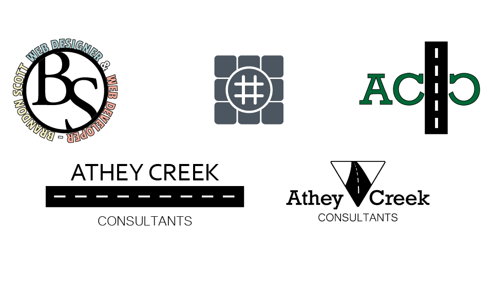

Design is a great tool to improve user experience, create a relationship with a user, or convey an emotion or feeling. The difference between good design and bad design is more than just the way a website looks and feels. There is the useability of the site, the user experience of the site, the confidence in the brand or information and the influence that design has on the users actions within the site.

Logos

Stylescapes